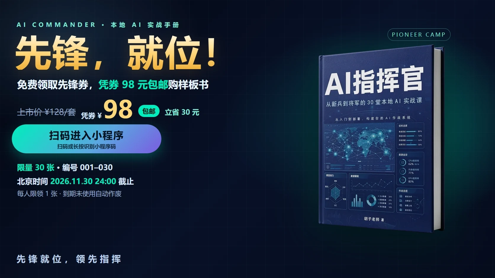

个人 AI 指挥系统实战课
10 节核心课，课堂 30 分钟＋课后 20—40 分钟。从判断场景、发令与核查，到工作、经营、内容流程。
课程规划价 ¥1688 · 正式售价及规则以课程公告为准
胡子老师 著 · 本地人工智能实践
从新兵到将军的 30 堂本地 AI 实战课
AI 是参谋，你是司令
从一本实战手册，到一套工作方法。判断任务、组织工具、核查结果，把AI用进工作与经营。
无需编程基础，也能开始 —— 写给 31–50 岁非技术读者与经营者的实战手册。


图书活动 · 查看完整规则
凭券 98 元包邮购样板书 · 限量 30 张 · 北京时间 2026 年 11 月 30 日 24:00 截止
共建者
来自不同产业，因对AI趋势的认同而同行。23位联合出版人带来行业经验与实践视角，与《AI指挥官》共同探索AI应用。
特约编委共建｜以专业视角，参与内容建议、审核与案例交流。
图书摘要
把任务、资料、指令与审核，组织成一套工作方法。
先判断任务，再选装备与方法；从岗位实践，逐步走向知识库、工作流与可管理的自动化。面对 AI 浪潮，真正要算清的是效率损耗、数据顾虑与落地断层这三笔账——完整回答在书里，它不卖焦虑，它给建制。
独立实战课
课程独立成体系，无需前置阅读。一课一任务，成果写入工作手册。
10 节核心课，课堂 30 分钟＋课后 20—40 分钟。从判断场景、发令与核查，到工作、经营、内容流程。
课程规划价 ¥1688 · 正式售价及规则以课程公告为准
结构示意，实际版式以课程上线交付为准。
研发成果
书籍出版与企业品牌著作已投入实战，私域工具研发完成，商城系统在规划中。
独立研发完成，已用于《AI指挥官》的书籍生产实践。
围绕企业定位、品牌表达与专业著作形成系统化能力。
面向日常私域运营，结合任务与人工确认讨论适用范围。
企业服务
说清业务问题、现有材料与交付目标，再确定工具、方案和验收标准。
从诊断、试点到知识库、工作流与岗位助手，分阶段建设。
把企业定位与专业积累，组织成著作、品牌表达和内容方法。
围绕报告、演示、图像、视频与日常运营，讨论具体交付。
围绕真实岗位任务，形成大纲、场景练习、模板与复盘。
下一步选择